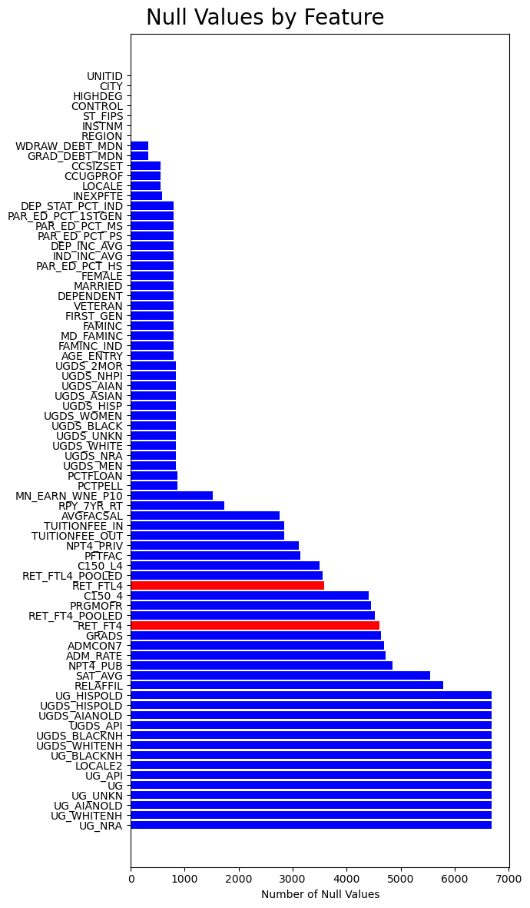

Performing Exploratory Data Analysis for Student Retention#
import matplotlib.pyplot as plt
import numpy as np
import seaborn as sns
import pandas as pd
import scipy.stats as stats
from tools.utils import combine_columns, compute_feature_importance
# Load in cleaned data
data = pd.read_csv("data/Most-Recent-Cohorts-Institution-filtered.csv")
data = data.drop('Unnamed: 0', axis=1)
| UNITID | INSTNM | CITY | HIGHDEG | CONTROL | ST_FIPS | REGION | LOCALE | LOCALE2 | CCUGPROF | ... | MD_FAMINC | FAMINC_IND | MN_EARN_WNE_P10 | UGDS_MEN | UGDS_WOMEN | GRADS | RET_FT4_POOLED | RET_FTL4_POOLED | PRGMOFR | ADMCON7 | |
|---|---|---|---|---|---|---|---|---|---|---|---|---|---|---|---|---|---|---|---|---|---|
| 0 | 100654 | Alabama A & M University | Normal | 4 | 1 | 1 | 5 | 12.0 | NaN | 10.0 | ... | 23553 | 10340.346032 | 35500 | 0.3978 | 0.6022 | 884.0 | 0.5533 | NaN | NaN | 1.0 |
| 1 | 100663 | University of Alabama at Birmingham | Birmingham | 4 | 1 | 1 | 5 | 12.0 | NaN | 9.0 | ... | 34489 | 30607.18029 | 48400 | 0.3816 | 0.6184 | 8685.0 | 0.8477 | NaN | NaN | 1.0 |
| 2 | 100690 | Amridge University | Montgomery | 4 | 2 | 1 | 5 | 12.0 | NaN | 5.0 | ... | 15033.5 | 20596.158491 | 47600 | 0.2886 | 0.7114 | 477.0 | 0.5000 | NaN | NaN | NaN |
| 3 | 100706 | University of Alabama in Huntsville | Huntsville | 4 | 1 | 1 | 5 | 12.0 | NaN | 15.0 | ... | 44787 | 27941.821963 | 52000 | 0.5891 | 0.4109 | 1972.0 | 0.8234 | NaN | NaN | 1.0 |
| 4 | 100724 | Alabama State University | Montgomery | 4 | 1 | 1 | 5 | 12.0 | NaN | 10.0 | ... | 22080.5 | 8551.802974 | 30600 | 0.3605 | 0.6395 | 458.0 | 0.6164 | NaN | NaN | 1.0 |
5 rows × 76 columns
four_yr_retention = data.RET_FT4
less_four_yr_retention = data.RET_FTL4
Histograms for Retention Rates#
fig, (ax1, ax2) = plt.subplots(1, 2)
fig.suptitle('Retention Rates')
ax1.set_title('Retention Rate at 4-year institutions')
ax1.hist(four_yr_retention, density = True)
ax2.set_title('Retention Rate at less than 4-year institutions')
ax2.hist(less_four_yr_retention, density = True)
plt.show()
plt.savefig('figures/figure_1.png')

<Figure size 1400x800 with 0 Axes>
Based on the histograms, we notice that retention rates for both 4-year and less than 4-year institutions appear to have a left-skewed distribution. However, less than 4-year institutions has more density contained within the higher retention rates compared to the 4-year institutions.
We will now explore sets of relevant variables and their relation to the retention rates.
Feature Analysis on Numerical variables (not including “Privacy Suppressed” variables)#
fouryr_features = ['HIGHDEG', 'ADM_RATE', 'ST_FIPS', 'LOCALE', 'SAT_AVG', 'CCUGPROF', 'CCSIZSET',
'UGDS_WHITE', 'UGDS_BLACK', 'UGDS_HISP', 'UGDS_ASIAN', 'UGDS_AIAN' ,
'UGDS_NHPI', 'UGDS_2MOR', 'UGDS_NRA','UGDS_UNKN',
'TUITIONFEE_IN', 'TUITIONFEE_OUT', 'INEXPFTE', 'AVGFACSAL' , 'PFTFAC',
'PCTPELL', 'PCTFLOAN', 'AGE_ENTRY',
'FAMINC','MD_FAMINC', 'ADMCON7', 'UGDS_MEN', 'UGDS_WOMEN', 'ANP',
## four year specific
'RET_FT4']
clean_data = combine_columns(data, 'NPT4_PUB', 'NPT4_PRIV', 'ANP')[fouryr_features].dropna()
compute_feature_importance(clean_data, 'RET_FT4')
| Feature | Importance | |
|---|---|---|
| 4 | SAT_AVG | 0.225643 |
| 19 | AVGFACSAL | 0.133965 |
| 24 | FAMINC | 0.062228 |
| 21 | PCTPELL | 0.062037 |
| 5 | CCUGPROF | 0.060383 |
| 6 | CCSIZSET | 0.049620 |
| 10 | UGDS_ASIAN | 0.040125 |
| 25 | MD_FAMINC | 0.029388 |
| 18 | INEXPFTE | 0.025987 |
| 17 | TUITIONFEE_OUT | 0.019062 |
| 15 | UGDS_UNKN | 0.018589 |
| 8 | UGDS_BLACK | 0.018518 |
| 28 | UGDS_WOMEN | 0.018496 |
| 1 | ADM_RATE | 0.017805 |
| 22 | PCTFLOAN | 0.017073 |
| 23 | AGE_ENTRY | 0.016026 |
| 11 | UGDS_AIAN | 0.015950 |
| 12 | UGDS_NHPI | 0.015931 |
| 27 | UGDS_MEN | 0.015854 |
| 7 | UGDS_WHITE | 0.014453 |
| 29 | ANP | 0.013849 |
| 20 | PFTFAC | 0.013830 |
| 9 | UGDS_HISP | 0.013818 |
| 2 | ST_FIPS | 0.013419 |
| 14 | UGDS_NRA | 0.012828 |
| 16 | TUITIONFEE_IN | 0.012763 |
| 13 | UGDS_2MOR | 0.012684 |
| 0 | HIGHDEG | 0.011446 |
| 3 | LOCALE | 0.009633 |
| 26 | ADMCON7 | 0.008596 |
less_fouryr_features = ['HIGHDEG', 'ADM_RATE', 'ST_FIPS', 'LOCALE', 'SAT_AVG', 'CCUGPROF', 'CCSIZSET',
'UGDS_WHITE', 'UGDS_BLACK', 'UGDS_HISP', 'UGDS_ASIAN', 'UGDS_AIAN' ,
'UGDS_NHPI', 'UGDS_2MOR', 'UGDS_NRA','UGDS_UNKN',
'TUITIONFEE_IN', 'TUITIONFEE_OUT', 'INEXPFTE', 'AVGFACSAL' , 'PFTFAC',
'PCTPELL', 'PCTFLOAN', 'AGE_ENTRY',
'FAMINC','MD_FAMINC', 'ADMCON7', 'UGDS_MEN', 'UGDS_WOMEN', 'ANP',
## less than four year specific
'RET_FTL4']
clean_data = combine_columns(data, 'NPT4_PUB', 'NPT4_PRIV', 'ANP')[less_fouryr_features].dropna()
compute_feature_importance(clean_data, 'RET_FTL4')
| Feature | Importance | |
|---|---|---|
| 9 | UGDS_HISP | 0.128479 |
| 11 | UGDS_AIAN | 0.122401 |
| 5 | CCUGPROF | 0.119550 |
| 18 | INEXPFTE | 0.079287 |
| 8 | UGDS_BLACK | 0.077447 |
| 12 | UGDS_NHPI | 0.075504 |
| 14 | UGDS_NRA | 0.062974 |
| 16 | TUITIONFEE_IN | 0.041554 |
| 13 | UGDS_2MOR | 0.037260 |
| 15 | UGDS_UNKN | 0.026139 |
| 3 | LOCALE | 0.022396 |
| 19 | AVGFACSAL | 0.020889 |
| 28 | UGDS_WOMEN | 0.019032 |
| 22 | PCTFLOAN | 0.018385 |
| 1 | ADM_RATE | 0.018180 |
| 2 | ST_FIPS | 0.015583 |
| 29 | ANP | 0.015238 |
| 27 | UGDS_MEN | 0.015216 |
| 21 | PCTPELL | 0.015094 |
| 26 | ADMCON7 | 0.014889 |
| 17 | TUITIONFEE_OUT | 0.011456 |
| 23 | AGE_ENTRY | 0.011372 |
| 4 | SAT_AVG | 0.007998 |
| 10 | UGDS_ASIAN | 0.007418 |
| 20 | PFTFAC | 0.005762 |
| 6 | CCSIZSET | 0.004947 |
| 7 | UGDS_WHITE | 0.003456 |
| 24 | FAMINC | 0.002026 |
| 25 | MD_FAMINC | 0.000068 |
| 0 | HIGHDEG | 0.000000 |
Many Null Values#
Pre-emptively lets look at the null values for each of the variables we will be focusing on.
Student retention, the dependent variables in our analaysis, are red.
nulls_by_column = data.isna().sum().sort_values(ascending=False)
colors = np.tile('b', len(nulls_by_column))
retention = ["RET_FT4", "RET_FTL4"]
retention_vars_mask = pd.Series(nulls_by_column.index).isin(retention).values
colors[retention_vars_mask] = np.tile('r', len(retention))
fig, ax = plt.subplots(figsize=(7, 12))
ax.barh(np.arange(-5, len(nulls_by_column)-5), nulls_by_column.values, color=colors)
ax.set_yticks(np.arange(-5, len(nulls_by_column)-5), labels=nulls_by_column.index)
ax.set_xlabel("Number of Null Values")
fig.suptitle("Null Values by Feature", size=20)
fig.tight_layout();

We will be dealing with a high amount of null values, especially when looking at the number of programs. In fact, the last several columns listed are entirely null.